Knjige
Od knjiga izdvajamo, neke od najčitanijih:
Zona Zamfirova
Stevan Sremac
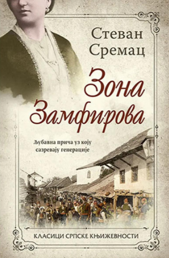700 RSD
Ljubavna priča uz koju sazrevaju generacije.
Zona Zamfirova je knjiga uz koju odrastaju generacije. Koja je tajna njene popularnosti? Zašto se i sto godina posle prvog izdanja priređuju pozorišne predstave, televizijske serije, igrani filmovi i mjuzikli i zašto su po pravilu hitovi svog vremena? Kako iz jedne konvencionalne fabule o dvoje mladih, razdvojenih staleškim razlikama, koji posle mnogobrojnih ljubavnih trzavica nalaze mir u bračnoj luci, nastalo je opšteprihvaćeno, nacionalno delo? Zato što delo ne čini tema nego način na koji je interpretirana.A priča o Zoni, bogatoj mezimici ćerki.
Derviš i smrt
Meša Selimović
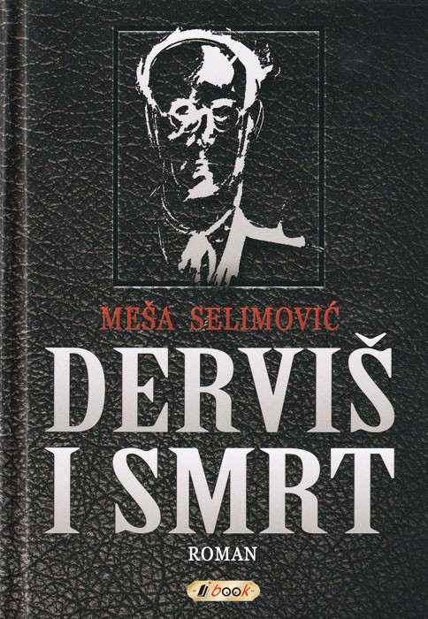450 RSD
Derviš i smrt obrađena lektira Meše Selimovića. Lektira sadrži detaljan kratak sadržaj, analizu djela, književne elemente, analizu likova i bilješku o piscu, sve potrebno za kvalitetnu obradu i aktivno sudjelovanje u nastavi.Derviš i smrt po vrsti je psihološki i filozofski roman, pun introspekcija glavnog lika, kojima on traži smisao života. Roman se sastoji od šesnaest poglavlja, a podijeljen je na dva dijela – prvi dio romana sastoji se od devet poglavlja, a drugi od preostalih sedam poglavlja. Svako poglavlje započinje ajetom – ulomkom iz Kurana, koji najavljuje temu poglavlja, a zadnje poglavlje započinje istim ajetom kao i prvo poglavlje, čime se ostvaruje ciklička struktura romana, gdje je završetak ujedno i početak.
Znakovi pored puta
Ivo Andrić

1250 RSD
Neiscrpno vrelo mudrosti, „Znakovi pored puta“ već skoro pola veka omiljeno su štivo mnogih generacija, knjiga koja se sa podjednakim uživanjem može čitati gde god se otvori, riznica najraznolikijih saveta, zapažanja i životnih uvida koje je ovaj pisac upućivao ne samo čitaocima nego i samome sebi.
Posebna vrednost ovog Laguninog izdanja su prevodi pojedinih izreka i citata stranih pisaca koje je Andrić u originalu na nemačkom, latinskom, francuskom i dr. jezicima unosio u svoju fasciklu, a koje u dosadašnjim izdanjima ovog osobenog dela nisu prevedeni.
Ovo luksuzno izdanje štampano je u tvrdom povezu, sa koricama od kože.
Na Drini ćuprija
Ivo Andrić
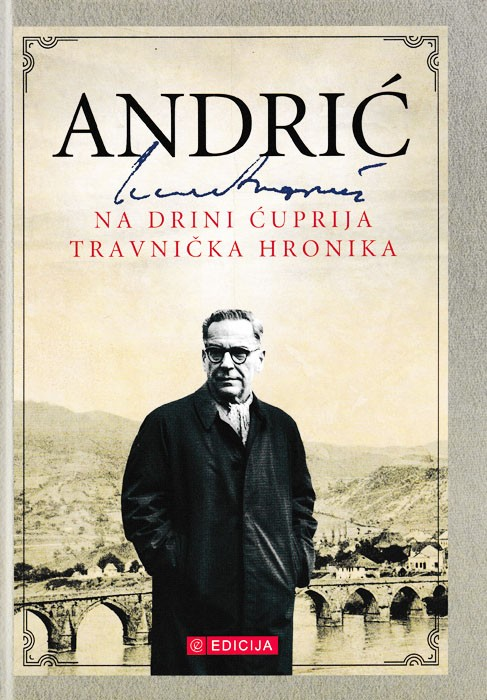1550 RSD
Najpoznatiji roman Ive Andrića, Na Drini ćurpija (1945), hronološki prati četiri veka zbivanja oko velikog mosta preko reke Drine u Višegradu, koji je izgradio veliki vezir Mehmed paša Sokolović, poreklom iz tih krajeva.
Godine 1516. Mehmed paša je, prema vladajućem običaju uzimanja danka u krvi, kao srpski dečak na silu odveden u tursku vojsku i poturčen da bi se kasnije uzdigao lestvicama vlasti i postao prvi do sultana. Kao moćnik, odlučio je da u rodnom kraju podigne zadužbinu, veliki kameni most na jedanaest lukova.
Izabrane pesme
Desanka Maksimović
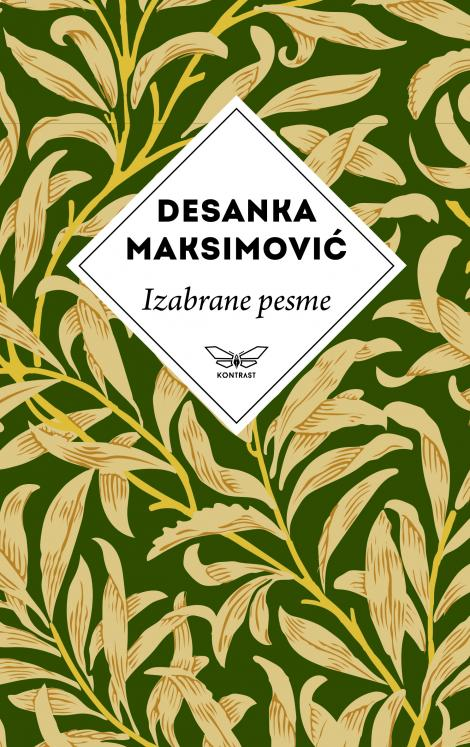1550 RSD
Književni časopis „Misao” 1920. godine širom je otvorio vrata pesmama mlade Desanke Maksimović, koje su nesvakidašnje neposredno i razumljivo progovarale o prirodi, ljubavi, neizgovorenim čežnjama. Danas, u kontekstu srpske književnosti XX veka, pesničko delo Desanke Maksimović zauzima neprikosnoveno mesto.Desanka Maksimović bila je i pesnikinja rodoljubivog osećanja, filozofskih refleksija, istrajne misaonosti i etosa slobode, dobrote, hrabrosti i odanosti.
Orlovi rano lete
Branko Ćopić
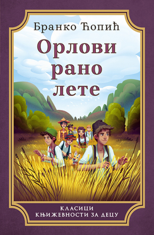1550 RSD
U bosanskom selu Lipovu odrasta grupa četvrtaka. Kada njihovu dobrodušnu učiteljicu Lanu zameni džangrizavi učitelj Paprika, koji veruje da je batina najbolje sredstvo za vaspitavanje đaka, dečaci, ali i jedna neustrašiva devojčica, odlučuju da se odmetnu i pobegnu u šumu. Tamo ubrzo niče logor Tepsija, u kojem će deca provesti mnoge bezbrižne dane, pune avantura. Međutim, počinje Drugi svetski rat i deca prevremeno odrastaju, shvatajući da se njihova borba protiv nepravde i nasilja nastavlja, ali ovog puta na novom i mnogo ozbiljnijem planu.
Od stranih knjiga izdvajamo:
The women
Kristin Hannah
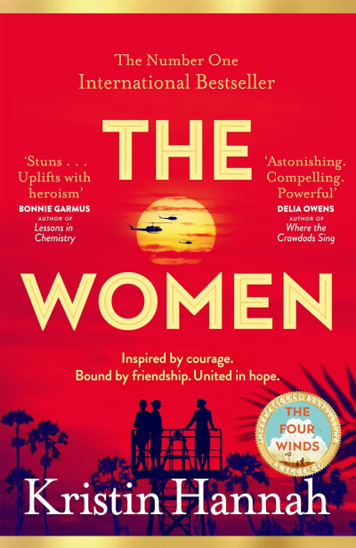1550 RSD
' Žene mogu biti heroji '. Kada dvadesetogodišnja studentkinja medicinskih sestara, Frances "Frankie" McGrath, čuje ove neočekivane reči, to je otkriće. Odrasla na idiličnom kalifornijskom ostrvu Coronado i zaštićena od strane svojih konzervativnih roditelja, uvek se ponosila time što je učinila pravu stvar, što je dobra devojka. Ali 1965. godine svet se menja, a ona odjednom zamišlja drugačiji put za svoj život. Kada njen brat ode da služi u Vijetnamu, ona se impulsivno pridružuje vojnim medicinskim sestrama i prati njegov put.
First lie wins
Aeshley Elston
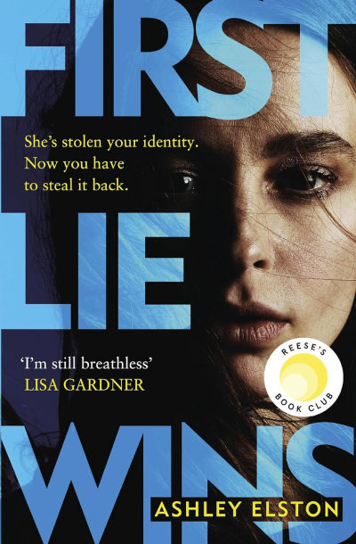860 RSD
Sve što će im reći je laž ... Evie Porter ima sve što devojka može da poželi: dragog dečka, kuću sa ogradom, zabavnu grupu prijatelja. Jedina caka: Evie Porter ne postoji. Prvo dolazi identitet. Jednom kada joj poslodavac da ime i lokaciju, ona sazna sve što treba znati o gradu i ljudima u njemu. Zatim znak: Rajan Sumner. Poslednji deo slagalice je posao. Za Evie, ovaj posao se oseća drugačije. Rajan joj se uvukao pod kožu i počela je da zamišlja drugu vrstu života za sebe - onaj u kojem njen šef ne vuče konce.
Serbian Folktales
J.K. Jackson
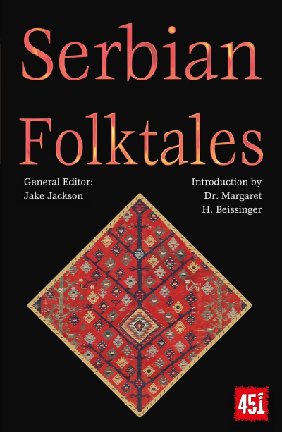860 RSD
Priče o srpskom narodu su poetske i oštre, odražavaju njegovo ponosno nasleđe kao južnih Slovena, koji su u godinama nakon pada Zapadnog rimskog carstva zahvatili jug, zauzevši zemlje nekada velikih starih Grka, Latina i Tračana. Njihove narodne priče odjekuju prelepim pejzažom i mešanjem sa klasičnim, herojska kultura Vizantijaca. Sa novim uvodom ova moćna zbirka okuplja priče kao što su "Onaj ko malo pita dobija mnogo", "Devojka mudrija od cara", "Grizač", "Dobra dela nikada ne propadaju" i "Ovan sa zlatnim runom".
Oddly Normal
Otis Frampton
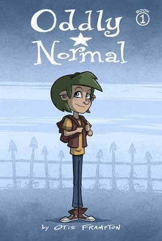1855 RSD
"Tekst sadrži neke sofisticirane vokabulare i književne reference (postoji vampir po imenu Bram, na primer), dok ostaje dostupan. Fignation je bogato zamišljen svet fantastičnih stvorenja. Crteži su zanimljivi i dobro iskoriste ćudljive, zasićene boje. Rekreacija kolekcije Čudno normalne objavljene 2006. godine koja se proširuje na originalnu priču i ponovo je zamišljala presudu ilustracija: Ovo je Framptonova potpuno realizovana vizija za Čudno normalno; vredi dodati u bilo koju kolekciju, čak i one koje već sadrže ranije izdanje."
Rick and Morty
Pamela Ribon
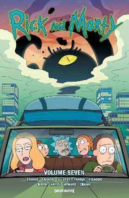2200 RSD
Hit serija stripova zasnovana na urnebesnoj ™ animiranoj emisiji Rick and Morti™ Dana Harmona i Justina Roilanda nastavlja se u potpuno novim pričama koje se ne vide na TV-u! Nadoknadite avanture degenerisanog genijalnog naučnika Ricka Sancheza dok vuče svog inherentno plašljivog unuka Mortija Smitha na opasne avanture širom univerzuma! Ova knjiga sadrži pisce nominovane za Ajznera Kajla Starksa (Sekcastle) i Magdalene Visaggio (Kim & Kim) u saradnji sa umetnicima serije CJ Cannon i Marc Ellerby, plus gostujući pisci Tini Hovard.
Attack On Titan: Before The Fall
Satoshi Shiki
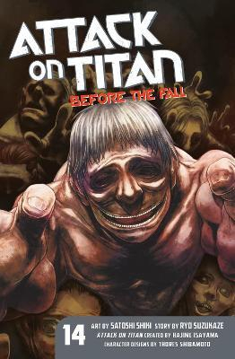1650 RSD
Čovečanstvo je naučilo da živi u samozadovoljstvu iza svojih visokih zidova, zaštićeno od džinovskih Titana. Ali kada kult obožavanja Titana otvori jednu od kapija, Titan pravi pustoš, proždirući kultiste. Nakon što se divljanje završi, dva mlada člana Istraživačkog korpusa šokirana su kada otkriju delimično probavljeni leš trudne žene - sa bebom koja je još uvek živa u njemu! Kakva će biti sudbina ovog "deteta Titana"? I kako će čovečanstvo naučiti da se nosi sa pretnjom Titana?